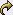

Viewing Curriculum is easy. All you need to do is locate the Curriculum Content channel. Each row represents a compiled set of content that has been previously added to this offering. Each curriculum's type can be identified by the icon to the left of it:
 - Links to curriculum that is already hosted online.
- Links to curriculum that must be downloaded in order to view.
To view any curriculum, click the name of that curriculum, or, simply click the magnifying glass icon to the right of the curriculum name. This curriculum either appears in a new browser window, or if it is a file, you will be prompted to download it to your local computer.

Removing Curriculum
If you decide that you would like to remove any curriculum from your offering, this can be done quite quickly. First, locate the Curriculum icon next to the name of the curriculum. Then click the Delete icon next to the name of the curriculum. Prior to deleting the content, the system will ask you if you really want to remove that curriculum. Select the Yes radio button and click Submit.
You will now see the updated Curriculum Content channel without the curriculum you just removed.